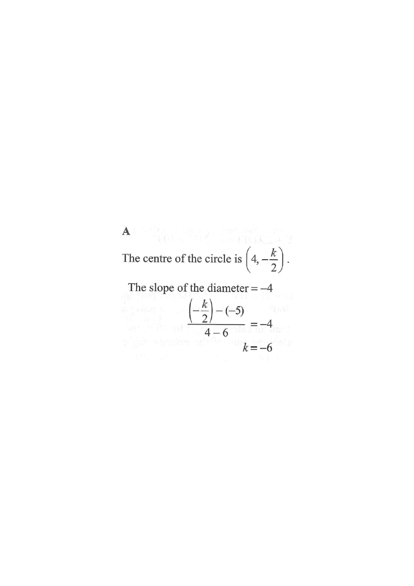

[2014 MC #26]
If a diameter of the circle
$$x^{2}+y^{2}-8x+ky-214=0$$
passes through the point $(6,-5)$ and the slope of the diameter is $-4$, then $k=$
A. $-6$
B. $-4$
C. $13$
D. $70$

Figure (original exam diagram)
STEP 1 · Find the centre of the circle
Complete the square in $x$ and $y$. Recall
$x^{2}+y^{2}+Dx+Ey+F=0$ has centre $\left(-\dfrac{D}{2},-\dfrac{E}{2}\right)$.
$$D=-8,\qquad E=k$$
So the centre is
$$C=\left(4,\;-\frac{k}{2}\right)$$
Key idea: a diameter always passes through the centre. So the slope condition is really a statement about the segment from $C$ to $(6,-5)$.
Centre of a Circle from its General Equation\(x^{2}+y^{2}+Dx+Ey+F=0\;\Longrightarrow\;\text{centre}\left(-\dfrac{D}{2},\ -\dfrac{E}{2}\right)\)Here \(D=-8\) and \(E=k\), so the centre is \(\left(4,\ -\dfrac{k}{2}\right)\).
STEP 2 · Set up the slope of the diameter
The diameter passes through $C\left(4,-\dfrac{k}{2}\right)$ and $P(6,-5)$. Using the slope formula:
Watch the order: subtract consistently. Both numerator and denominator must use $C$ then $P$ (or $P$ then $C$ — but not mixed).
Slope Formula\(m=\dfrac{y_{2}-y_{1}}{x_{2}-x_{1}}\)The diameter joins the centre \(\left(4,\ -\dfrac{k}{2}\right)\) to \((6,\ -5)\) and has slope \(-4\).
STEP 3 · Apply the given slope $= -4$
$$\frac{-\dfrac{k}{2}+5}{-2}=-4$$
Check: with $k=-6$, the centre is $(4,3)$. Slope of $C(4,3)$ to $(6,-5)$ is $\frac{-5-3}{6-4}=\frac{-8}{2}=-4$ ✔
Answer: A. $\;-6$
Circle becomes $x^{2}+y^{2}-8x-6y-214=0$, centre $(4,3)$, radius $\sqrt{4^{2}+3^{2}+214}=\sqrt{239}$.
PRACTICESimilar question — try it yourself
Question. If a diameter of the circle \(x^{2}+y^{2}-12x+ky-45=0\) passes through the point \((2,\ 1)\) and the slope of the diameter is \(-1\), then \(k=\) A. \(-6\) B. \(0\) C. \(6\) D. \(12\)
Show the worked solution
Step 1. With \(D=-12\) and \(E=k\), the centre is \(\left(6,\ -\dfrac{k}{2}\right)\).
Step 2. A diameter passes through the centre, so the slope from \(\left(6,\ -\dfrac{k}{2}\right)\) to \((2,\ 1)\) is \(-1\): \(\dfrac{1+\dfrac{k}{2}}{2-6}=-1\).
Step 3. Multiply both sides by \(-4\): \(1+\dfrac{k}{2}=4\), so \(\dfrac{k}{2}=3\) and \(k=6\).
Step 4. Check: the centre is \((6,\ -3)\) and the slope from \((6,\ -3)\) to \((2,\ 1)\) is \(\dfrac{1+3}{2-6}=-1\) ✓.